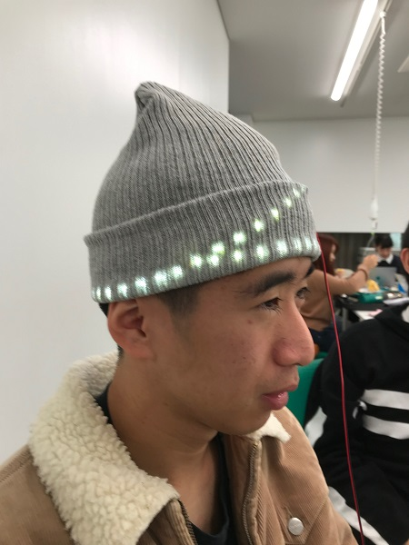

microbitを使ってLEDを光らせた

僕はチームのメンバーと何を光らせようか考えた結果メンバーの「光るニット帽ってないよね」という言葉からニット帽を光らせようということになりました。
しかし実際に作ってみて光の熱量からニット帽をかぶっていると暑いという問題が出てきたりしてきました。
問題点を一つずつ解決していき完成品を作ったらおもしらいものになっているのではないかと思える体験だった。
戻る